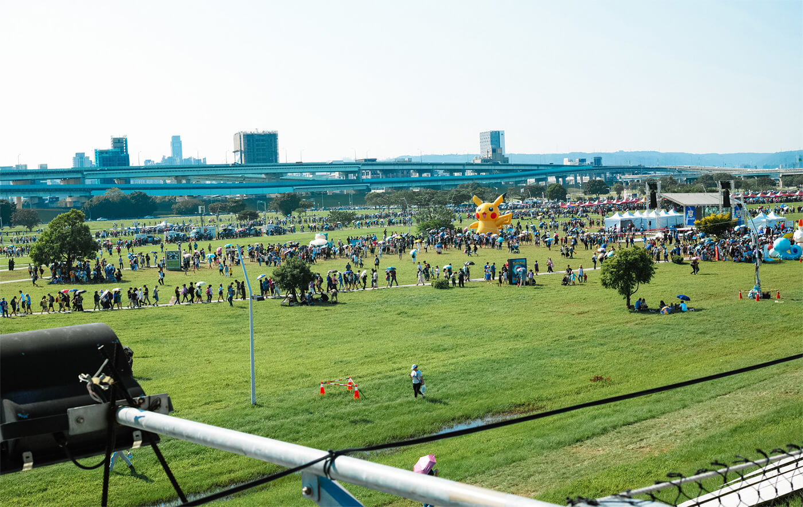

資本主義が生み出したもの～ピケティから大女優まで～
「最低なインタビュアーの話」
トマ・ピケティ、21世紀の資本、グラマーな女優、極道の妻たち。

この文章はダミーです。文字の大きさ、量、字間、行間等を確認するために入れています。
親譲りの無鉄砲で小供の時から損ばかりしている。小学校に居る時分学校の二階から飛び降りて一週間ほど腰を抜かした事がある。なぜそんな無闇をしたと聞く人があるかも知れぬ。
別段深い理由でもない。新築の二階から首を出していたら、同級生の一人が冗談に、いくら威張っても、そこから飛び降りる事は出来まい。弱虫やーい。と囃したからである。小使に負ぶさって帰って来た時、おやじが大きな眼をして二階ぐらいから飛び降りて。